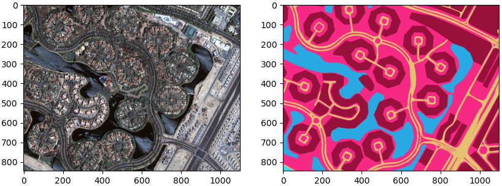
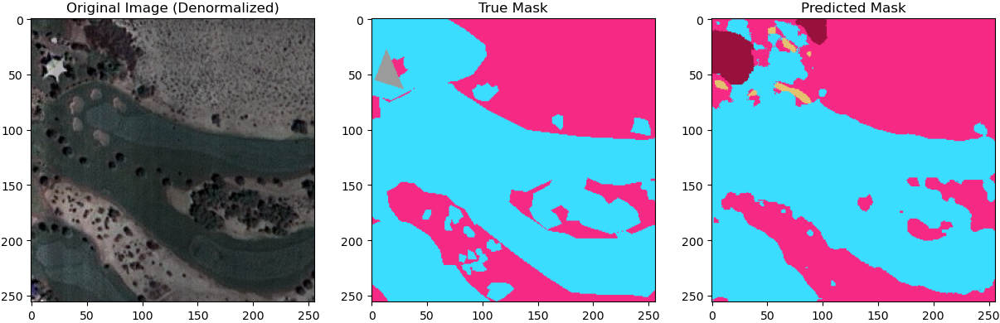

Project Overview
Land segmentation from aerial imagery is a challenging problem in remote sensing and computer vision, requiring accurate classification of different land use types such as water, land, roads, buildings, and vegetation. In this project, I explored three different models — a U-Net neural network, a Logistic Regression model, and a Random Forest Classifier — for segmenting land use from aerial images. The dataset used was sourced from Kaggle, consisting of labeled aerial images for semantic segmentation tasks. The objective was to evaluate the performance of deep learning against traditional machine learning models for this classification problem.
Data Preparation and Preprocessing
The dataset consisted of high-resolution aerial images, each paired with a corresponding mask image that denotes different land use types using color codes. To make the data suitable for training the models, the following steps were performed: image resizing, data augmentation, class balancing, and mask conversion.
Model Development and Training
U-Net Model
The U-Net architecture is widely used for semantic segmentation tasks in deep learning. In this project, the U-Net model was trained using a custom loss function — Categorical Focal Loss — which focuses on difficult-to-classify pixels. The model was optimized using the Adam optimizer and trained for 50 epochs on a GPU to leverage accelerated computing power.
Logistic Regression Model
Logistic Regression is a simple yet powerful machine learning algorithm commonly used for binary classification tasks. For the purpose of pixel-wise multi-class classification in this project, the RGB values of each pixel were used as features, and the corresponding class label was the target variable.

Random Forest Classifier
Random Forest is an ensemble learning method that constructs multiple decision trees during training and outputs the mode of the classes for classification tasks. Similar to the Logistic Regression model, the Random Forest Classifier was trained using pixel data.

Results and Performance Comparison
The performance of the three models was evaluated using accuracy, precision, recall, and F1-score metrics. The U-Net model, owing to its deep learning architecture, excelled in capturing complex spatial dependencies and provided the highest overall accuracy. However, the Logistic Regression and Random Forest models, while computationally less expensive, also delivered respectable results for simpler segmentation tasks.

Conclusion
This project successfully demonstrated the capabilities and limitations of both deep learning (U-Net) and traditional machine learning (Logistic Regression, Random Forest) methods for land segmentation classification. While the U-Net model provided superior accuracy, the machine learning models offered simpler and faster alternatives with reasonable performance.
Future Work
Future directions for this project could include experimenting with more advanced deep learning models like DeepLabV3+ or incorporating transfer learning techniques.
See on GitHub Back to Projects